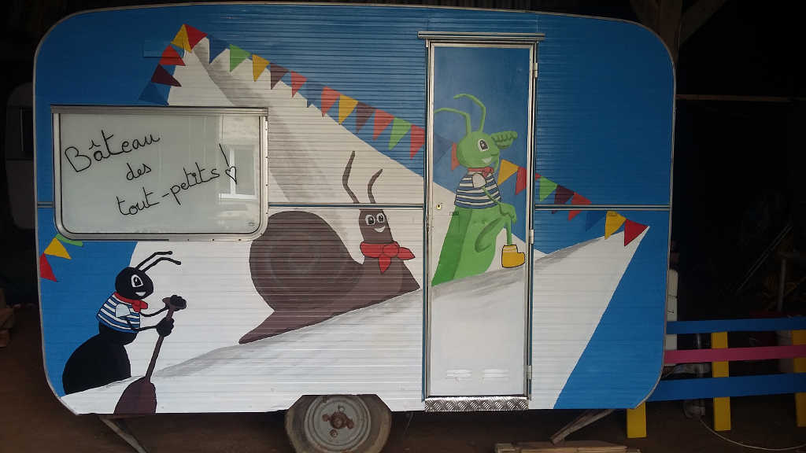

Nos créations sur mesure

La caravane des touts petits Nurserie
Un espace au calme pour changer les bébés lors de festivals ou lors de vos fêtes privées.
Festival du Bout du Monde, Les Jeudis du Port de Brest, ...

La caravane toilettes sèches PMR
Accessible aux personnes à mobilité réduite, ces toilettes sèches disposent d'un point d’eau.